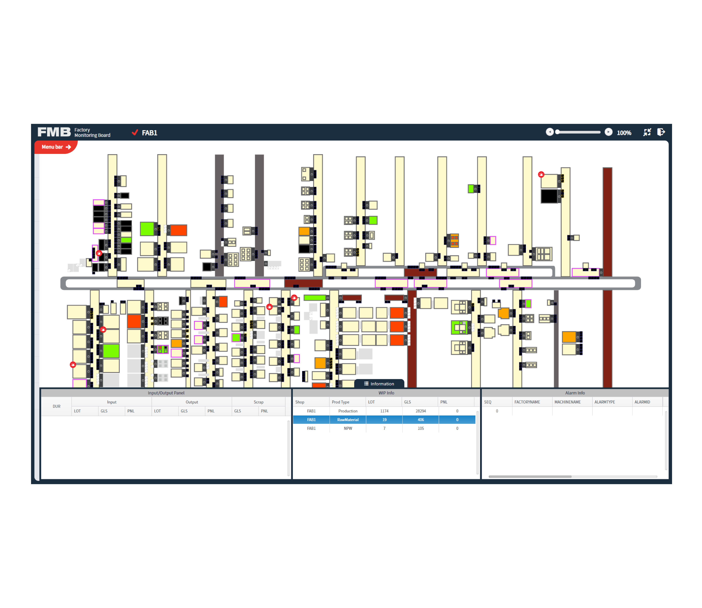

FMB(Factory Modeling Board)
설비 모니터링 퍼블리싱

Project Overview
중국 공장(V3, Tianma 등)의 생산 설비 상태를 실시간 시각화하는 UI를 SVG 기반으로 구축한 프로젝트. 공장 설비 레이아웃을 직접 마크업하고, 데이터 상태에 따라 시각적으로 변하는 UI를 구현함. 현장 파일 배포 및 시각화 중심의 퍼블리싱 업무를 수행.
기능제안
- 설비 선택시 해당 설비가 크게 보이고 좌표값을 사용하여 가운데에 위치하게한다
- 필터 기능을 이용하여 원하는 stocker설비만 보이게 해서 좀더 편의성을 키웠다
도면작업
- 공장 도면 기반 설비 레이아웃을 Illustrator로 제작하고, SVG에 ID 값을 부여하여 설비 상태 및 이동 제어 기능 구현
- 다양한 적재상태에 따른 아이콘들 제작 작업
현장교육
- 도면이나 아이디값 변경에 따른 내용을 현장에서 잘 숙지할 수 있게 하기위한 교육문서작업
- 중국 고객들에게 교육 실행
업무내용
- 공장 레이아웃 SVG 제작 및 마크업
- 설비 상태 데이터에 따른 색상 변화 및 정보 표시 처리
- 실시간 시각화와 반응형 대응을 고려한 UI 퍼블리싱 구조 구현
- 현장 구축을 위한 파일 배포 및 개발 협업